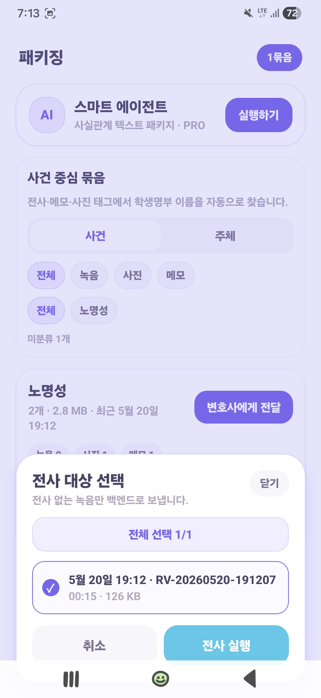
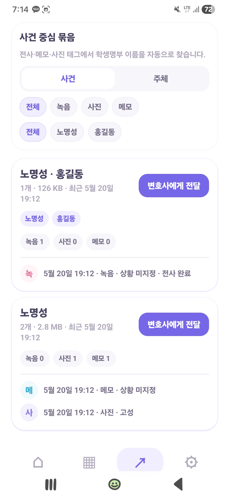
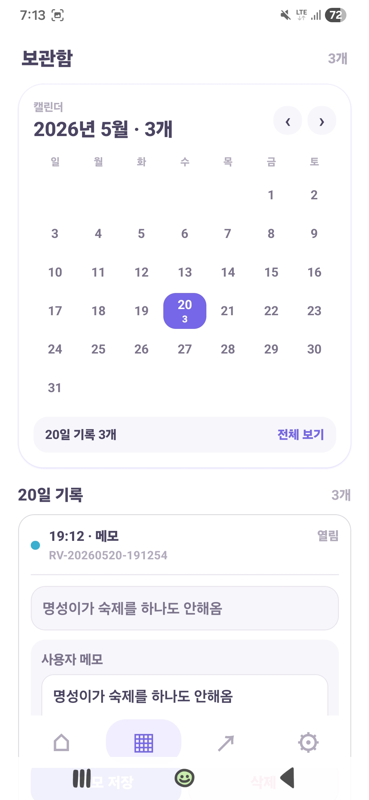

스마트 증거수집
녹음·사진·메모를 현장에서 바로 모을 수 있습니다.
현장에서 중요한 건 남기는 속도와 다시 찾는 속도입니다. 루지코지는 스마트 증거수집과 기록검색을 한 흐름으로 이어줍니다.
녹음·사진·메모를 현장에서 바로 모을 수 있습니다.
필요한 녹음만 골라 빠르게 텍스트로 바꿔줍니다.
이름과 주체를 읽고 사건 단위로 기록을 정리합니다.
학생 이름, 날짜, 사건 기준으로 필요한 기록을 바로 찾습니다.
찾은 기록을 자문이나 보고용으로 빠르게 꺼내 전달합니다.
현장에서 남긴 기록이 그대로 검색 가능한 증거가 되도록 설계했습니다.

필요한 녹음만 골라 AI 전사로 빠르게 정리합니다.

전사 결과와 메모를 같은 맥락에서 바로 묶습니다.

날짜, 사건, 주체 기준으로 필요한 기록을 곧바로 꺼냅니다.
날짜별 보관함과 사건 묶음으로 필요한 기록을 즉시 찾고, 바로 이어서 확인합니다.
인디스쿨 쪽지로 Pro 코드를 안내받으면 스마트 증거수집과 기록검색 흐름을 바로 시작할 수 있습니다.
인디스쿨에서 시작 의사를 남깁니다.
회신으로 필요한 코드와 시작 흐름을 받습니다.
증거를 모으고 검색하는 흐름을 즉시 시작합니다.